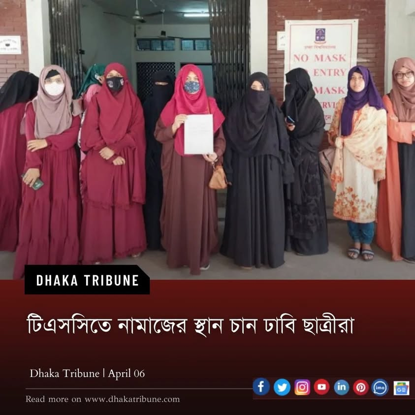

এরচে' দুঃখজনক আর কি হতে পারে যে, মুসলিম মেয়েরা নামাজের স্থান চেয়ে আন্দোলন করে নিতে…
৬ এপ্রিল, ২০২২
এরচে' দুঃখজনক আর কি হতে পারে যে, মুসলিম মেয়েরা নামাজের স্থান চেয়ে আন্দোলন করে নিতে হয়। অথচ, প্রত্যেক মসজিদে ছেলেদের পাশাপাশি মেয়েদের স্থান করে দেয়াই ছিল ইসলামের বিধান। আমরা সে ফতোয়া পাল্টে মেয়েদের জন্য মসজিদ হারাম করে দিয়েছি! পুরো বিশ্বের আলেমদের দৃষ্টিভঙ্গি বদলালেও বাঙালি আল্লামাদের চিন্তাধারা উন্নতির নাম-গন্ধও নেই।
